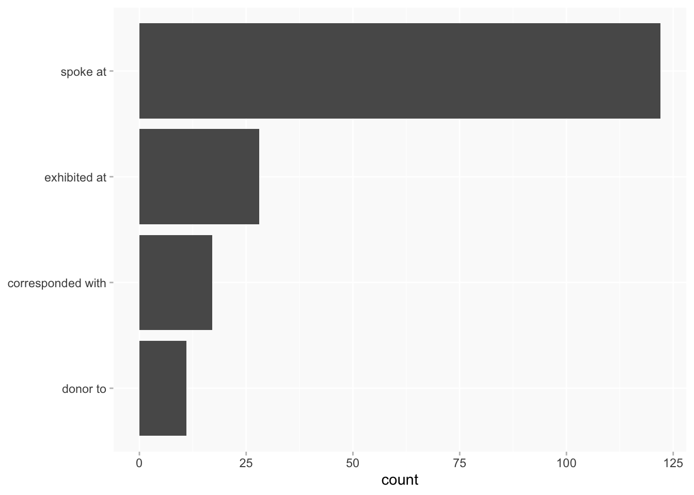
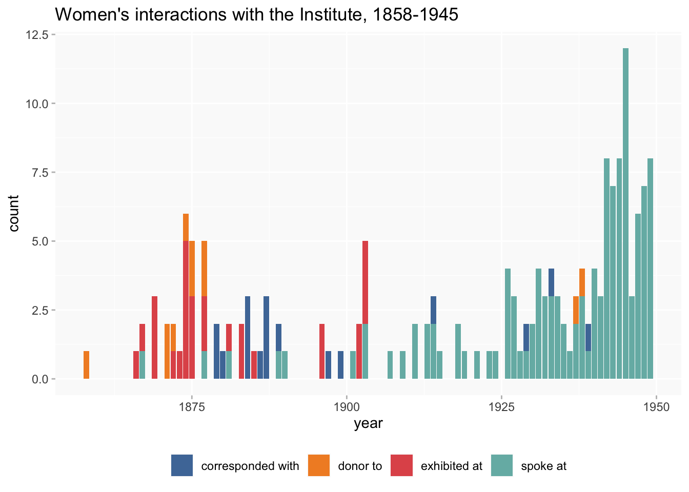

Women at the Royal Archaeological Institute
RAI
ppa
Initial exploration of the main forms of women’s engagement with RAI
Update:
- Some improvements to the elections query to capture a few women who were being omitted.
- Correction of my confusion about Members/Fellows.
Todo:
- Chart about “non-interacting” members (ie those for whom there is only a record of election/member of).
- Improve timelines to distinguish members from non-members
Wikibase query
Types of interaction
The same categories that were analysed for SAL:
- spoke at (P23)
- exhibited at (P13)
- corresponded with (P73)
- donor to (P111)
Again, ignoring a few others with only a handful instances (applicant to, loaner to).
A count of one here represents one dated event in the wikibase, completely ignoring any differences in the nature/significance of the activity. (Or any links between activities.)
Noted that corresponded with here is a much smaller proportion of activity than for SAL.
Interactions over time

Activity by Members and non-Members
I have now amalgamated the two sources of information about membership - election and was member of statements - giving priority to the election date over membership start date if there’s a difference.
In this chart “member” includes any interactions before a woman was elected.
This time women are only counted as Members for interactions after election. (This has changed slightly in the corrected update.)
- Ordered by date of earliest interaction with the Society.
Timelines
Note that this only includes women who had at least one interaction in addition to member of/election data. A number of members don’t have a start year; I’m thinking about how best to indicate that or otherwise distinguish members from non-members in this chart.
(As with other tall charts, may be easier to read if you right-click on the image and open in a new tab.)